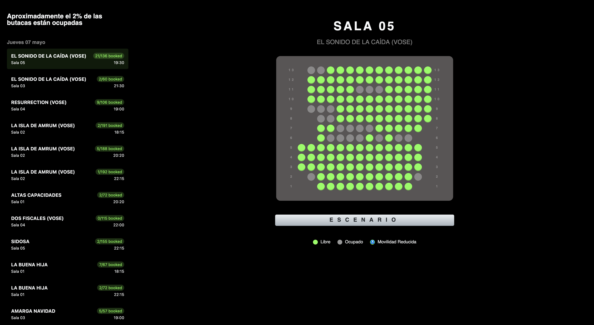

Project Overview
Web scraper that gets all seats from a the Golem Cinema in Madrid and determines which screenings have the least amount of seats for you to enjoy your own semi-private screening.

How it Works
The scraper goes through the website in order to find the screenings for the day and collects the unstructured data. Then it displays it according to the screening room the selected movie is in for a visual view of the room and its availability.
Technical Stack
- Web Scraper: I used the Playwright libary in Python to scrape the website.